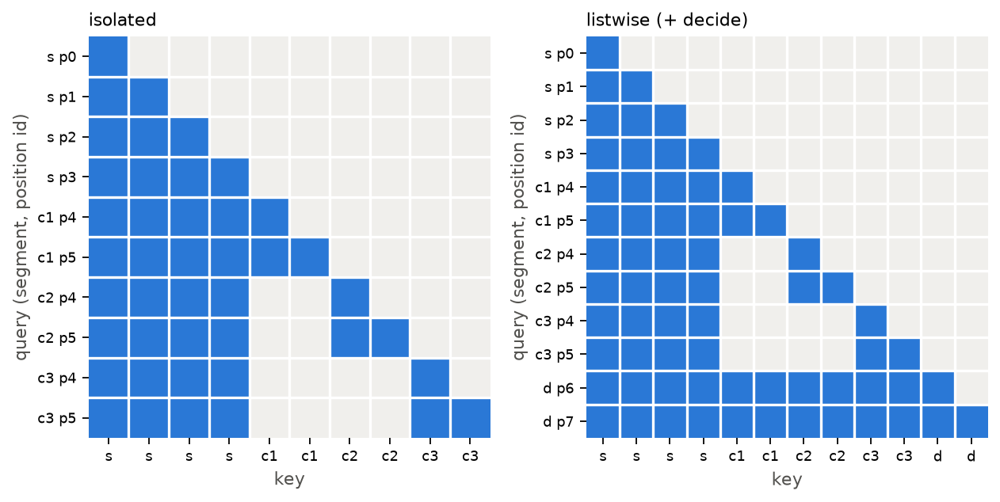
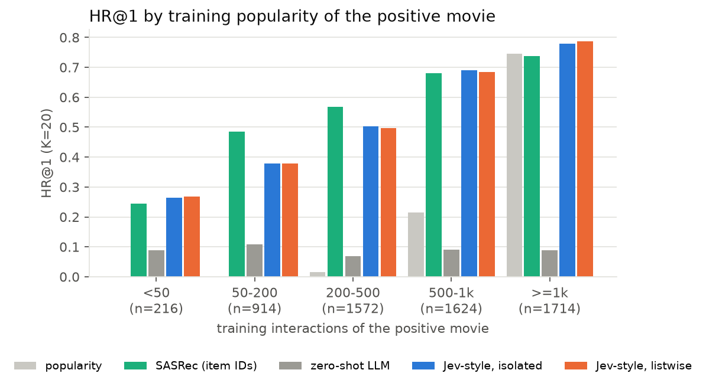
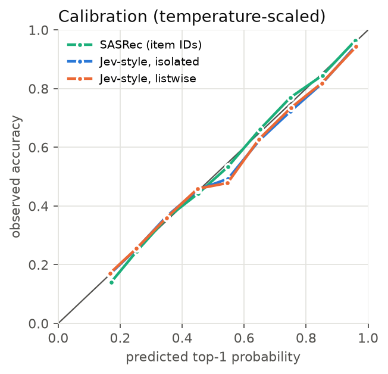
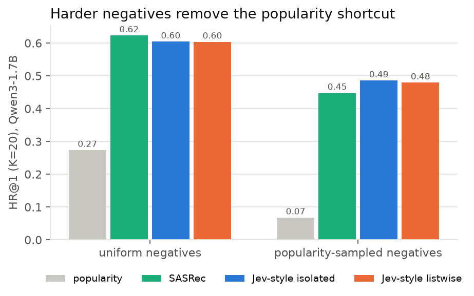
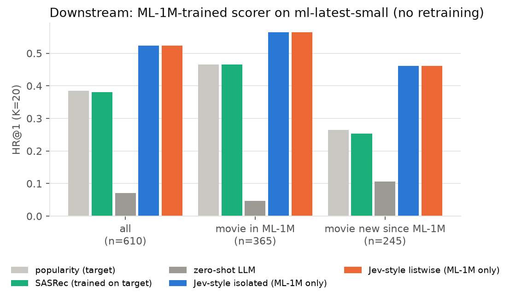
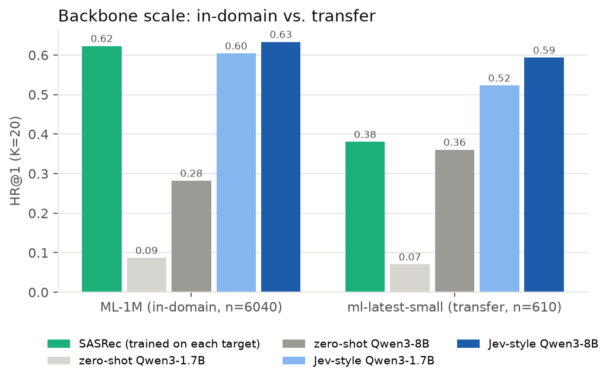
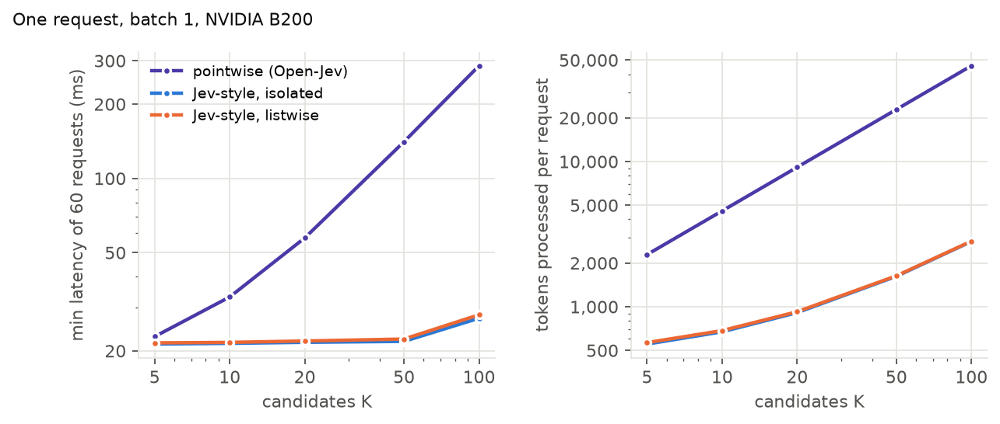

TypeSafe's Jev is an LLM that never writes text: it reads a state, answers typed questions (Choice, Score, yes/no) and returns calibrated probabilities in one pass. Read with recommender-system eyes, that is a ranking model: the state is the user, the options of a Choice are the candidate items, and the calibrated probability is a pCTR. This post takes that reading literally. We build Jev-style scorers on Qwen3, train them on MovieLens-1M, and ask three questions:
ml-latest-small, the scorer reaches 0.523 (1.7B) / 0.593 (8B) HR@1 against 0.380 for a SASRec trained on
the target data, and 0.555 vs 0.253 on movies released after ML-1M was collected (8B).Each MovieLens user is one decision request. The state is the user's last 20 ratings rendered as text
(- Heat (1995) [Action, Crime, Thriller]: 4). The question is a Choice over K=20 movies: the
one the user actually rated next and 19 random movies they never rated. We use leave-one-out splits (last interaction =
test, second last = validation) and fixed seeds, so every model is scored on identical candidate sets. Training uses 8
random earlier positions per user, about 48k decisions per epoch.
Every LLM variant uses the same readout. A scalar head on the last hidden state of each candidate is initialised to
W_yes − W_no from the pretrained unembedding, so at step 0 it is the zero-shot
"Answer Yes or No:" margin. We train LoRA (r=16) with softmax cross-entropy over the K candidates plus 0.1×Brier,
then fit one temperature on validation.
| mode | layout | state encoded | candidates interact |
|---|---|---|---|
pointwise | Open-Jev: one sequence per (state, candidate), plain causal attention | K times | no |
isolated | one sequence per request; block mask, position ids restart after the state | once | no |
listwise | isolated + a decide segment that attends to everything; low-rank bilinear term between decide and each candidate, zero-initialised | once | via decide |

The masks exactly as jevrec.model.block_mask builds them for a 4-token state and three
2-token candidates. Every candidate restarts at position 4, so candidate i sees the same keys at the same
positions as it would alone. That makes isolated the pointwise function, computed with one pass over the
state.
Two practical notes. The mask trick needs a pure-attention backbone: linear-attention or SSM layers (for example Qwen3.5's Gated DeltaNet) ignore attention masks, which is why Open-Jev and kev fall back to one row per candidate with a forked state cache on those models. And because the equivalence holds for the training forward pass too, you get the saving during training, not only at inference.
Qwen3-1.7B and Qwen3-8B, 1 epoch each, 2×B200 per run (about 23 and 75 minutes). 6,040 test users. "Auto @95%" is the share of requests you could decide automatically at 95% precision by thresholding confidence: the operating point calibrated decisions are for.
| model | HR@1 | HR@5 | NDCG@10 | NLL | ECE | auto @95% | tokens / request |
|---|---|---|---|---|---|---|---|
| popularity | 0.274 | 0.695 | 0.558 | 2.33 | 0.025 | 0.0% | – |
| SASRec (item IDs) | 0.623 | 0.899 | 0.799 | 1.25 | 0.013 | 22.9% | – |
| zero-shot LLM (isolated) | 0.087 | 0.365 | 0.304 | 2.95 | 0.005 | 0.0% | 910 |
| Jev-style, isolated | 0.604 | 0.894 | 0.785 | 1.29 | 0.023 | 20.5% | 910 |
| same weights, pointwise | 0.605 | 0.894 | 0.786 | 1.29 | 0.023 | 20.6% | 9,124 |
| Jev-style, listwise | 0.604 | 0.894 | 0.785 | 1.29 | 0.026 | 18.6% | 923 |
| 8B zero-shot (isolated) | 0.282 | 0.670 | 0.544 | 2.35 | 0.018 | 0.4% | 910 |
| 8B Jev-style, isolated | 0.633 | 0.906 | 0.804 | 1.19 | 0.022 | 26.9% | 910 |
| 8B Jev-style, listwise | 0.633 | 0.906 | 0.804 | 1.19 | 0.026 | 26.0% | 923 |
Rows without a tag are Qwen3-1.7B. Paired against SASRec on the same requests (McNemar; bootstrap 95% CI of the HR@1 difference): 1.7B −1.9 points, p=0.002, CI [−3.0, −0.8]; 8B +1.0 points, p=0.07, CI [−0.05, +2.1]. So 8B ties SASRec, it does not beat it.
Three observations.
Pointwise and isolated are the same model. Loading the isolated weights into the pointwise layout gives the same numbers to bf16 noise (0.6048 vs 0.6043), for ten times the tokens. The zero-shot rows agree too (0.084 vs 0.087).
Zero-shot quality depends heavily on scale. The 1.7B Yes/No readout is close to useless (0.087 vs 0.05 random), while 8B already reaches 0.282, above popularity. One epoch of LoRA on 48k decisions then closes the gap to SASRec for both. The 8B model is also the better decider: at 95% precision it can automate 27% of requests, against 23% for SASRec.
The listwise head is not idle but does not help. Its query projection grows from zero to norm 3.8 and it changes 8% of top-1 decisions, yet average HR@1, NLL and ECE are unchanged. With random negatives, "is this the next movie?" can be answered one candidate at a time. The natural objection is that the negatives are too easy, so we tested that next.

Where the gap to SASRec comes from. The LLM wins on the rarest positives (<50 training interactions, 0.264 vs 0.245) and on the head (≥500), and loses clearly in the 50–500 band, where ID embeddings have enough data to learn co-watch structure that titles and genres do not express.

After temperature scaling (T≈1.2 for the LLM; raw ECE 0.071 → 0.023) both model families sit on the diagonal. Calibration is cheap for both, so it is no reason to prefer one over the other.
Uniform negatives are mostly obscure movies, so "pick the popular one" already gets 0.27 HR@1. We reran the 1.7B setup with the 19 negatives sampled in proportion to popularity (median negative popularity 562 instead of 107), for training and test alike.
| model | HR@1 | HR@5 | NDCG@10 | NLL | ECE | auto @95% |
|---|---|---|---|---|---|---|
| popularity | 0.068 | 0.294 | 0.253 | 3.00 | 0.015 | 0.0% |
| SASRec | 0.448 | 0.795 | 0.671 | 1.84 | 0.026 | 5.8% |
| zero-shot LLM | 0.084 | 0.341 | 0.296 | 2.96 | 0.005 | 0.0% |
| Jev-style, isolated | 0.486 | 0.806 | 0.693 | 1.69 | 0.017 | 11.4% |
| Jev-style, listwise | 0.480 | 0.806 | 0.693 | 1.68 | 0.019 | 11.6% |

Popularity collapses to chance and SASRec loses 18 points; the LLM scorer loses 12 and now leads by 3.8 (McNemar p=1.5e-9, CI [+2.5, +5.0]). It also doubles the share of requests that can be automated at 95% precision.
Two conclusions. Part of SASRec's lead with uniform negatives was popularity, which ID embeddings encode very efficiently. And even when negatives are plausible, the listwise head does not help: it is 0.6 points worse at top-1 (p=0.03), with a hair better NLL. Scoring candidates independently against the user is enough here.
ML-1M stops in 2000. ml-latest-small is a 2018 MovieLens snapshot (610 users, 9.7k movies) with the same
movie ids, so we can split its test positives into movies that exist in ML-1M and movies that did not exist yet. The
LLM scorers are trained only on ML-1M and run unchanged. Popularity and SASRec get the easier deal: they are
trained on ml-latest-small itself.
| model | all (n=610) | movie in ML-1M (n=365) | new since ML-1M (n=245) |
|---|---|---|---|
| popularity (trained on target) | 0.385 | 0.466 | 0.265 |
| SASRec (trained on target) | 0.380 | 0.466 | 0.253 |
| zero-shot LLM | 0.070 | 0.047 | 0.106 |
| Jev-style isolated (ML-1M only) | 0.523 | 0.564 | 0.461 |
| Jev-style listwise (ML-1M only) | 0.523 | 0.564 | 0.461 |
| 8B zero-shot | 0.361 | 0.381 | 0.331 |
| 8B Jev-style isolated (ML-1M only) | 0.593 | 0.619 | 0.555 |
| 8B Jev-style listwise (ML-1M only) | 0.585 | 0.608 | 0.551 |
Rows without a tag are Qwen3-1.7B. Gains over SASRec: McNemar p=3e-8 (1.7B) and p=6e-16 (8B).


Moving from 1.7B to 8B adds 3 points in-domain and 7 points in transfer. The zero-shot readout gains even more (0.09 → 0.28 in-domain).

One request, batch 1, B200, Hugging Face eager + SDPA. The three modes share one backbone and are timed interleaved over 60 requests. We plot the minimum because the box is shared and requests stall intermittently by ~50 ms under host load (the medians are in the repo). Tokens grow as K·(state + candidate) for pointwise and as state + K·candidate for the masked modes. The masked modes stay at the ~21 ms launch floor of a 28-layer eager model up to K=50. Pointwise reaches 57 ms at K=20 and 286 ms at K=100, against 22 and 27 ms.
In recommender terms this is the familiar split between user-side and item-side computation. The masked layout computes the user once per request and each item once, the way a production ranker reuses user features across candidates, while keeping full cross-attention between each item and the user.
git clone https://github.com/wdlctc/jev-recommend && cd jev-recommend pip install -e . && python -m pytest -q tests # mask equivalence, CPU GA=0,1 GB=2,3 bash scripts/run_all.sh # train, zero-shot, baselines, latency bash scripts/run_downstream.sh # ml-latest-small transfer python scripts/analyze.py runs/q17b figures # slices + figures